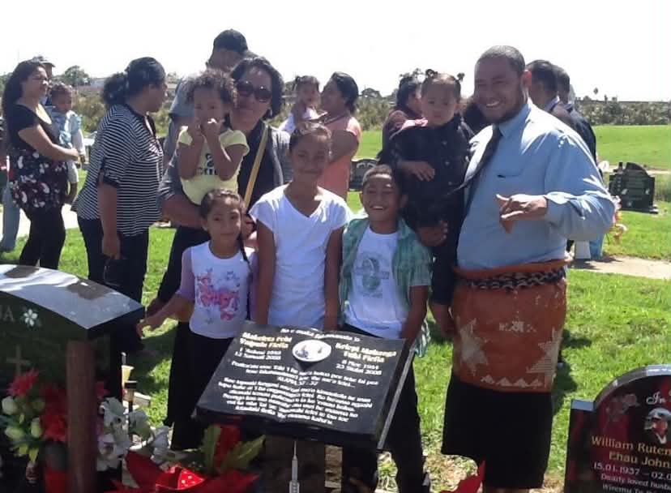

Together as One
Our family usually visit New Zealand for Christmas and it was always the best part of the year. All my parents family moved to New Zealand and our family stays in Tonga which makes it fun for us to visit them and for them to visit us in Tonga. We would always have a mini reunion and have fun activities to do, spiritually and physically.